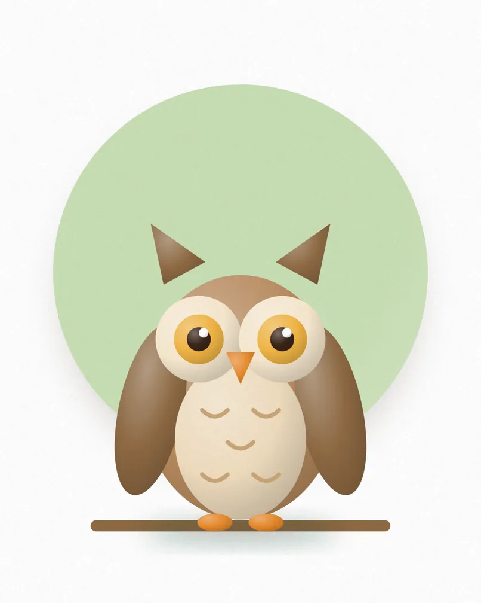

BiscuitAge 3 · Labrador cross
Gentle and clumsy, loves long walks and chasing tennis balls.
Dogs · Good with children, Good with other pets
Enquire about Biscuit{{tagline}}
Visiting hours {{hours_weekdays}}. Please book ahead for groups.
Adopt or visit{{owner_name}} opened {{business_name}} in {{year_founded}} to give animals in need a second chance. Today our team and volunteers care for them every day of the year.
Gentle and clumsy, loves long walks and chasing tennis balls.
A calm senior who wants a warm bed and a slow stroll.
Bouncy, bright and learning fast. Best with a training-minded family.
Affectionate and a little shy at first. Warms up with treats.

Playful and chatty. Follows you from room to room.
A lap cat who purrs the moment you sit down.
Full of energy, loves toys and climbing the curtains.
Gentle and wise. Happiest with one calm person.

Curious and gentle. Bonded with Hazel, so they go home together.
Calm, loves a cuddle and a dandelion leaf.
Chirpy and sociable, needs a friend of her own kind.
Quiet and sweet, a perfect first small pet.

Recovering from a wing injury. Release planned in the spring.
Found as a chick and hand-reared by our wildlife team.
A small owl with a big personality, almost ready to fly free.
Quiet and watchful, on the mend after a road accident.
{{owner_name}} opened {{business_name}} in {{year_founded}} to give animals in need a second chance. Today our team and volunteers care for them every day of the year.
Rescued, rehabilitated and ready for a home. Independent, cuddly and everything between. Rabbits, guinea pigs and other little friends. Injured and orphaned wild animals, cared for until release.
Visit us, walk the dogs and meet the animals who need a home.
Tell us about your home and we help you find the right fit.
Complete the adoption form, then welcome them home.
Send us a message and we will reply within a few days.
| Monday to Friday | {{hours_weekdays}} |
|---|---|
| Saturday | {{hours_saturday}} |
| Sunday | {{hours_sunday}} |